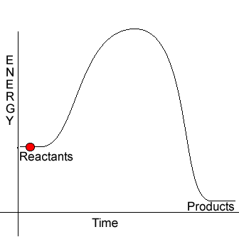
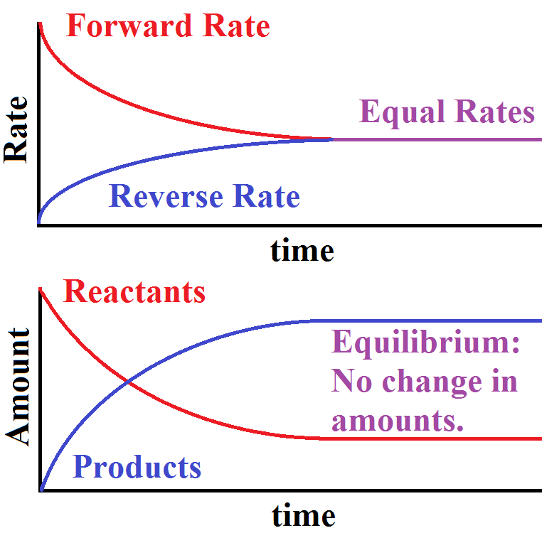

Chapter 13: Properties of Solutions
- Solution is formed when one substance disperses uniformly throughout another
- Natural Tendency toward Mixing
- Mixing of gases is spontaneous
- Formation of solutions is favored by increase in entropy with mixing
- Intermolecular Forces of Solution
- Solute-solute: Interactions between solute particles must be overcome to disperse throughout the solvent
- Solvent-solvent: Interactions between solvent particles must be overcome to make room for the solute
- Solvent-solute: Interactions between solute and solvent particles
- Solutions form when magnitude of solute-solvent is equal to or greater than solute-solute and solvent-solvent
- Solvation: Interactions between solute and solvent
- Hydration: Solvation when water is the solvent
- Enthalpies of Change
- Enthalpy of Solution of Formation: Change in solute-solute + Change in solvent-solvent + Change in solute-solvent
- Change in solute-solute: Positive enthalpy
- Change in solvent-solvent: Positive enthalpy
- Change in solute-solvent: Negative enthalpy
- General Solubility
- Solubility: Maximum amount of solute that can dissolve in a given amount of solvent at a specific temperature
- Crystallization: Opposite process of dissolving
- Dynamic equilibrium: Crystallization and Solvation rates become equal
- Saturated: Solution in equilibrium with undissolved solute
- Unsaturated: Not saturated yet
- Supersaturated: Solution that is saturated at a condition that allows for more solute, ex. Higher temp
- Solute will remain dissolved if cooled to a lower temperature
- If a small amount of crystal solute is added, the excess solute will crystallize
- Miscible: Liquids that mix in all proportions
- Immiscible: Liquids that don’t mix in all proportions
- “Like dissolves Like” Nonpolar-Nonpolar, Polar-Polar
- Solubility of gas and partial pressure of gas are directly proportional
- Henry’s law: Sg = kPg
- K = Henry’s law constant, changes on substance
- Sg = Solubility, usually in molarity
- Temperature on Solubility
- Solubility of solids in water increase as temperature increases
- Solubility of gases in water decreases as temperature increases
- Thermal Pollution: Fish lack the oxygen to breathe in water as temperatures increases in lakes and streams
- Solution Concentration
- Mass Percentage = Mass of Component / Total Mass x 100%
- Parts per million = Mass of Component / Total Mass x 10^6
- Mole fraction = Moles of Component / Total Moles
- Molarity = Moles of Solute / Liters of Solvent
- Molality = Moles of Solute / Kg of Solvent
- Colligative Properties
- Vapor Pressure Lowering
Chapter 14: Chemical Kinetics
-

- Chemical Kinetics: Rate of Reaction
- Factors that affect reaction rate
- Nature of Reactants
- Reactant Concentrations
- Reaction Temperature
- Presence of Catalyst
- Average Rate: Change in concentration / Time
- Rate of Appearance (+): Rate at which products appear
- Rate of Disappearance (-): Rate at which reactants disappear
- Rate decreases over time
- Instantaneous Rate: Slope of T/M curve at a specific time
- Rate means instantaneous unless otherwise specified
- Initial Rate: Instantaneous rate at time 0
- Rate Law: Rate = k[A]m[B]n
- Rate Constant (k): Changes with temperature
- Large k ( > 10^9): fast reaction
- Low k: ( < 10^9): slow reaction
- A and B: Reactants
- Must be determined experimentally
- Reaction Order: Exponent in rate law
- Overall Reaction Order: Sum of orders
- First Order Reactions
- Rate: - (Change in [A] / Change in T) = k[A]
- Single reactant raised to first power
- Differential Rate Law: Expresses how rate depends on concentration
- Integrated Rate law: Ln(At /A0) = -kt
- Second Order Reactions
- Rate: - (Change in [A] / Change in T) = k[A]2
- One reactant raised to second power or two reactants raised to first
- Integrated Rate Law: 1/At = kt + 1/A0
- Zero Order Reactions
- Rate: Change in [A] / Change in time = k
- Rate of disappearance is independent of A
- Integrated Rate Law: [A]t = -kt + [A]0
- Most common when gases decompose on surface of solids
- Half-Life
- Time required for concentration of reactant to reach half of initial value
- How to determine half-life (for single ordered reactions)
- ln(½[A]0 / [A]0) = -kt1/2
- t1/2 = 0.693 / k
- For other ordered reactions, substitute ½ [A] into integrated rate law
- Half-life stays constant throughout reaction
- Temperature and Rate
- Rate increases with temperature
- Collision model: Molecules must collide to react
- Molecules must be oriented in a specific way to react
- Activation Energy (Ea): Energy required to initiate a reaction
- Generally, lower Ea results in faster reaction
- Activated Complex: Molecule having correct arrangement of atoms
- Shown at top of energy curve
- Fraction of molecules having energy equal to or greater than Ea
- Equation: f = e^(-Ea / RT)
- Greater temperature results in greater fraction of molecules to have kinetic energy greater than or equal to Ea
- Arrhenius Equation
- k = Ae^(-Ea / RT)
- A: Frequency factor of collisions
- ln(k1/k2) = (Ea/R)(1/T2 - 1/T1)
- Reaction Mechanisms
- Elementary Reactions: Occurs in single step
- Rate law determined from molecularity
- Molecularity: number of molecules as reactants
- Unimolecular: one molecule involved
- Bimolecular: two molecules involved
- Termolecular: three or more molecules involved
- Less common as the chance of 4 molecules striking is low
- Intermediates: formed and used up in a reaction
- Multi-step mechanism: Reaction where multiple steps occur
- Rate determining step: Slowest step
- Mechanism with slow initial step:
- Rate derived from initial step
- Mechanism with fast initial step
- Rate derived from slow step
- If intermediate exists, it must be substituted with reverse reaction of fast steps
- Catalysis
- Catalyst: Changes speed of chemical reaction
- Exists at start of reaction
- Lowers activation energy of the reaction therefore, lowering k
- Homogeneous Catalyst: Catalyst present in same phase as reactants
- Heterogeneous Catalysis: Catalyst in a phase different from phase of reactants
- Often composed of metals or metal oxides
- Adsorption: Binding of molecules to a surface
- Atoms migrate along metal surface
- Enzymes: Biological catalyst
- Enzymes are very specific to which reaction they catalyze
- Active Site: Place of catalysis
- Substrates: Substances that react at active site
- Lock and key model: Substrates fit through a lock
- Enzyme-substrate complex: Combination of enzyme and substrate
- Uses intermolecular forces to bind
- Reactivity of substrates increases through distortion in fitting into active site, or a change in electron density
- Enzyme Inhibitors: Binds to the active site to block entry of substrate
- Turnover Number: Number of catalyzed reactions occurring at an active site
- Usually 10^3 to 10^7 per second
Chapter 15: Chemical Equilibrium
-

- Equilibrium can be achieved because reaction is reversible
- Forward Rate = Reverse Rate
- Kc = Concentration of Products / Concentration of Reactants
- Kp = Kc(RT)^(Change in n)
- Change in n: moles of gaseous product - moles of gaseous reactant
- K >> 1: Equilibrium lies to the right, products dominate
- K << 1: Equilibrium lies to the left, reactants dominate
- Equilibrium of reverse reaction is reciprocal
- Equilibrium constant of reaction multiplied by a number is the constant to the power of the number
- Equilibrium constant for a net reaction is equilibrium constant of both individual reactants multiplied to each other
- Whenever pure solid or liquid is involved in heterogenous equilibrium, it is not included in the calculation of equilibrium constant
- Q = K : Equilibrium
- Q > K: Shifts left to reach equilibrium
- Q < K: Shifts right to reach equilibrium
AP Chem
AP Chemistry study guide created by Jeffrey Chou.
Based off of Mr. Leung's curriculum and the Baron's AP Chemistry resource.